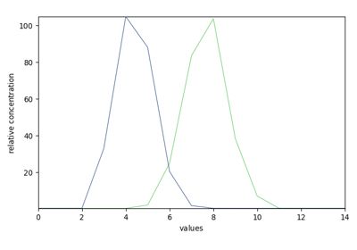

spectrochempy.concatenate¶
-
concatenate(*datasets, **kwargs)[source]¶ Concatenation of
NDDatasetobjects along a given axis.Any number of
NDDatasetobjects can be concatenated (by default the last on the last dimension). For this operation to be defined the following must be true :all inputs must be valid
NDDatasetobjects;units of data and axis must be compatible
concatenation is along the axis specified or the last one;
along the non-concatenated dimensions, shape and units coordinates must match.
- Parameters
*datasets (positional |NDDataset| arguments) – The dataset(s) to be concatenated to the current dataset. The datasets must have the same shape, except in the dimension corresponding to axis (the last, by default).
**kwargs (dict) – See other parameters.
- Returns
out – A
NDDatasetcreated from the contenations of theNDDatasetinput objects.- Other Parameters
dims (str, optional, default=’x’) – The dimension along which the operation is applied.
force_stack (bool, optional, default=False) – If True, the dataset are stacked instead of being concatenated. This means that a new dimension is prepended to each dataset before being stacked, except if one of the dimension is of size one. If this case the datasets are squeezed before stacking. The stacking is only possible is the shape of the various datasets are identical. This process is equivalent of using the method
stack.
See also
stackStack of
NDDatasetobjects along the first dimension.
Examples
>>> from spectrochempy import * ... >>> A = NDDataset.read('irdata/nh4y-activation.spg', protocol='omnic') >>> B = NDDataset.read('irdata/nh4y-activation.scp') >>> C = NDDataset.concatenate(A[10:], B[3:5], A[:10], axis=0) >>> A[10:].shape, B[3:5].shape, A[:10].shape, C.shape ((45, 5549), (2, 5549), (10, 5549), (57, 5549))
or
>>> D = A.concatenate(B, B, axis=0) >>> A.shape, B.shape, D.shape ((55, 5549), (55, 5549), (165, 5549))
>>> E = A.concatenate(B, axis=1) >>> A.shape, B.shape, E.shape ((55, 5549), (55, 5549), (55, 11098))
Stacking of datasets: for nDimensional datasets (with the same shape), a new dimension is added
>>> F = A.concatenate(B, force_stack=True) >>> A.shape, B.shape, F.shape ((55, 5549), (55, 5549), (2, 55, 5549))
If one of the dimensions is of size one, then this dimension is removed before stacking
>>> G = A[0].concatenate(B[0], force_stack=True) >>> A[0].shape, B[0].shape, G.shape ((1, 5549), (1, 5549), (2, 5549))
Examples using spectrochempy.concatenate¶
